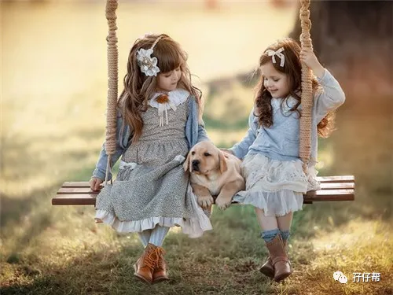
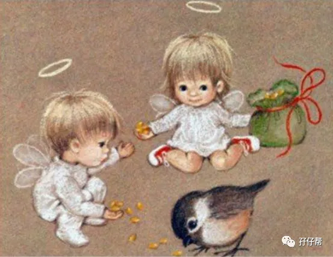
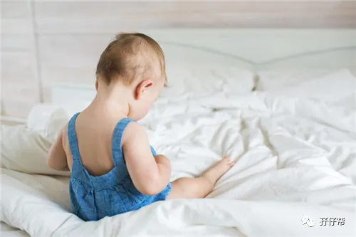
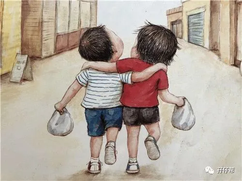
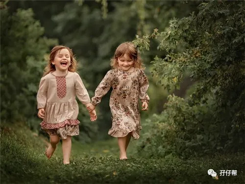

文|圆圈妈，一个文思如尿崩的双胎妈妈
图|来自网络，如有侵权，请联系删除
· 正 · 文 · 来 · 啦 ·
今天的推文有点“鸡汤文”，双胞胎父母们打鸡血专用，旨意给那个对养育双胞胎过度焦虑的你一句温馨提示：不要再逢人就说「生养双胞胎累死了！」你其实幸福极了！
一口气得俩，不止让你少受一次罪，还是你送给孩子们毕生最珍贵的礼物！
也许你尚在孕中或者俩娃年龄还小，你关注的东西往往只聚焦在双胞胎孩子的身上，面对上不封顶，无限叠加的屎尿屁，通常挫败感大于幸福感，双胞胎有伴儿的重要性，你更加无暇顾及！
来听听这位4岁双胞胎妈妈的真实感言吧！也许你会豁然开朗哦！
【01】
圆圈满百日，第一次带双胞胎哥俩出去遛。
果然，双胞胎自带主角光环，让我们格外显眼，在深圳北站的大草坪上坐一会儿，马上就围上来一群人，驻足观看….
我膨胀的虚荣心，羞涩地接受着路人各种溢美之词。其中有位大妈的一番感慨，让我百思不得其解:“真好啊，哥俩有伴儿一块长大，真是太有福气了！”
我不懂为何这也算是一个生双胞胎的好处！
我的原生家庭，姐弟众多，经常打架，抢零食吃，被迫资源共享…没觉得有多好。
一晃眼，双胞胎圆圈兄弟4岁了，我的世界突然安静了许多。经常吵着要喝奶，换尿布，读绘本…的崽儿们，突然间再也不烦我了.
即便是起床了，他们也懒得吵醒我，哥俩组团去卧室外面嗨！
“走，我们去客厅玩托马斯！”随着圈圈一声令下，圆圆一咕噜爬起来，积极响应弟弟的号召。
哥俩大概觉得老母亲不靠谱，反正喊不醒，还不如自己找兄弟玩去！
当看着哥俩一起搭积木，嬉笑怒骂间，两人眼神中流露出那种发光发亮的眼神时，我突然间想起那位大妈的话，茅塞顿开：“果然，有伴儿是真的好！”
【02】
「吃得苦中苦，方为人上人」
这句古语，放在养育双胞胎上，真的再恰当不过了，
经常劝我想开点，忍一忍，熬一熬的那些过来人的确没有骗我，养育双胞胎真的是一段先苦后甜的过程，我甚至还觉得，其实同时养两个比只养一个更轻松。
也许你会反驳我：”屁扯！这是好了伤疤忘了疼！”
最直接最现实的问题就是经济压力，光是奶粉尿不湿这些大支出就足以让众多父母们瑟瑟发抖。
的确，养育双胞胎，经济支出是最不容忽视的问题，比如纯配方奶喂养，人家是一罐奶粉吃30天，我们家是一罐奶粉3天，秒！光！
但我指的“轻松”并不是说经济上的宽松，因为日子怎么过，每个家庭都有各自的标准。
我对孩子穿淘宝货0容忍，但却不能忍受他们吃国产奶粉，再贵也舍得买买买！可是，搁在你身上，你可能对淘宝货和洋奶粉不屑一顾。
这就是不同消费观！没有可比性。我所说的轻松指的是精神上的轻松。
如果是独生子女，虽然可以独享父母的爱，独揽父母给孩子创造的物质条件，但我们都清楚，一个孩子的成长，并不是空有物质条件就足够了，他还需要精神上的需求，比如玩耍，同伴等。
而如何填补这个精神上的空缺呢？那就是我们为人父母的责任了！
也许你会说，找同伴还不简单，把孩子多带出去跟同龄人一起玩就行了。
但是，同伴友谊和手足之情是不一样的，那种血浓于水的亲情，再好的玩伴也替代不了。当小伙伴们各自归家，回到家里依然只有一人孤单单地对着影子发呆！
家有一孩，表面上看起来很轻松，但实际上，孩子的孤单就是父母的负担。
孩子不快乐，父母也轻松不到哪里去！
孩子依着窗外，落寞地看着外面一群嬉戏的孩子，那眼神，那背影…总是会不经意间触碰到内心那根柔软的弦…
而我也曾经历过那种一碰就会断的心弦！
有一次，圈圈生病住院了，队友在医院陪护，我带着圆圆在家里。
习惯了和圈圈一起玩闹，突然间圈圈不在身边了，圆圆显得特别异常，特别安静，喜欢的玩具都不感兴趣了。
有时候，自己玩着托马斯轨道，突然跑到我身边大哭：“妈妈，我要圈圈！你带我去医院找圈圈玩吧！”
我看着他哭，瞬间泪流满面！那是我第一次在孩子面前哭！
我哭是因为，他们从小陪伴彼此，从来没有体验过孤单的感觉！这突如其来的寂寞感，对一个三岁多的小男孩来说，太残忍了！（不知道独生子女是如何战胜这种精神空虚的！）
终于有机会见识到双胞胎之一孤单的一面了，但这种感觉相当扎心！比割自己肉还难受！
【03】
总是会在某个月黑风高的晚上，看着他们哥俩侧睡的容颜，矫情地感慨一番：我上半辈子路人甲一枚，没做过什么惊天动地的事情，唯独养了一对双胞胎让我觉得这一生够我吹一辈子牛逼！
这真是一件很伟大的事情，给孩子们彼此找了一个一模一样的玩伴，而且是从小胚芽就在一起长大的那种！
你想陪伴孩子，缓解他的“寂寞空虚冷”，但却欲言又止了，该说什么呢？怎样说呢？孩子喜欢听吗？…
大人和孩子之间毕竟有代沟，你觉得好玩的东西，孩子可能并不感兴趣。
你忙碌着自己的事业时，总是会不经意间惦记着孩子一个人会不会感到无聊寂寞。
很多游戏本来是孩子之间的活动，大人是无法参与进来的，但由于他没有兄弟姐妹，这个陪玩的“重任”就交给父母来完成了。
你苦笑着，尴尬着陪玩，不觉得更累吗？
如果你正好喜欢跟孩子打成一片，觉得累得其所也就罢了，关键是，即使这样，也未必能达到应有的效果。
很浅显的一个问题，这个本该是孩子们之间的游戏，却跟大人一起玩，孩子会开心吗？
我在之前推文《为什么我的双胞胎不分开养》中提到，双胞胎孩子不应该分开带，最直接的理由就是，双胞胎有伴儿一起长大，一起玩，在某种程度上，是给父母们减负减压！
而我此刻的感觉就是，该我“享福”的时候到了！
当他们互相提醒，督促对方要去刷牙洗脸吃早餐…
当他们互相帮助，给对方递上衣服鞋子…
当他们互相争抢，刚打得火热，瞬间又抱成一团，贼笑…
…
我发现，我根本就是多余的！
习惯了为他们忙前忙活，习惯被他们需要着，突然间他们哥俩有互动了，各自在彼此身上找到乐子了，却陡然觉得，我才是孤单的那个人！
有时候，还有一种妒忌心里，羡慕他们莫名其妙的“心有灵犀”，和那些说不完的共同话题…
但却又很庆幸，双胞胎孩子们成长的轨迹都尚且让人满意！至少，我没有提前进入更年期，成为怨妇一族，主要得益于我的双胞胎儿子们！
虽然在一起的他们经常争吵，打架...让人头疼不已！但我认为，手足间不打架的童年是不完美的！
偶尔看他们啼笑皆非的小打小闹，我也觉得有伴儿一起打架真的是件很幸福的事情，好过对着空气自言自语！
感谢自己熬过来了！
我没有放弃任何一个孩子！还给他们带来奇妙特别的人生。
-END-
今日互动话题
#哪一个瞬间让你觉得双胞胎有伴儿很重要#
评论区聊一聊呗！
一好文推荐一
一加入社群一
一关注孖仔帮一
觉得此文有点意思嘛？？请点“在看”





